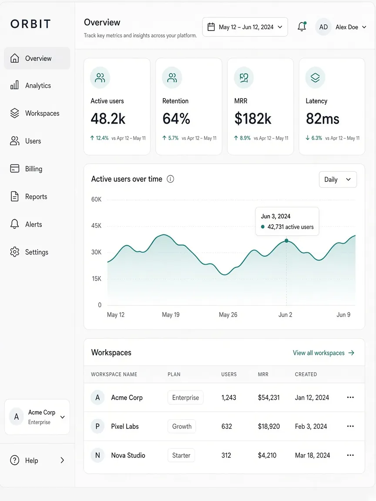

Концептуальный проект
Orbit
Дизайн аналитического кабинета: меню, сводка, график, таблица.
01
Обзор
Концептуальный проект светлого веб-сервиса: боковое меню, четыре числа, график, таблица пространств.
02
Задача
Собрать кабинет, который читается как рабочий инструмент — без декоративного шума.
03
Концепт
Слева навигация, сверху период, в теле — карточки, график, таблица. Числа на макете — примеры, не реальные метрики.
04
Визуальное направление
Бумага, тонкая линейка, спокойная типографика. Акцент только на цифрах и состоянии графика.
05
Desktop
Широкий кабинет: сводка сверху, график в центре, таблица внизу.

06
Mobile
Отдельных мобильных макетов в этом концепте нет. Кабинет собран как desktop-экран.
07
Результат
Экран кабинета как дизайн-концепция. Не аналитика действующего продукта.